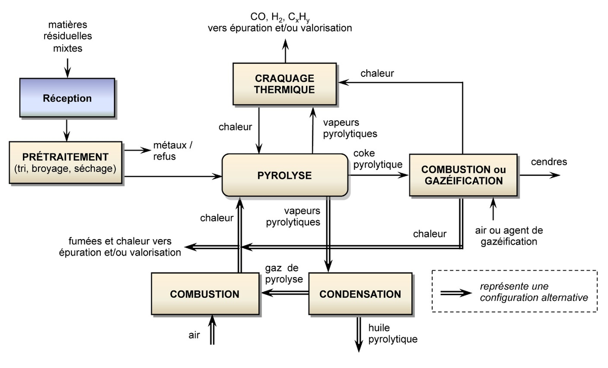

Génie des procédés · 2017 à 2022 · Cameroun
Cinq ans, cinq travaux de terrain, un même fil rouge
Ingénieur génie des procédés agroalimentaires, Saint-Jérôme Polytechnique de Douala, 15/20, mention Distinction
Je ne l'avais pas planifié : quatre de mes cinq travaux portent sur la même question. Que faire de ce que l'installation rejette : l'éviter, ou en faire quelque chose ? Chacun m'a aussi appris à mesurer, prouver, puis chiffrer.
2022 · Réduire les rejets d'eaux huileuses d'une centrale à gaz
SJP5 · Mémoire de fin d'études · Kribi Power Development Company
Une centrale de 216 MW, treize moteurs, 200 maintenances sur 250 dues à des fuites d'huile. Corrélation de 0,92 entre le volume de déchets liquides des moteurs et la consommation d'huile (2019 à 2021), Pareto : 20 % des équipements causent 80 % des fuites, Ishikawa de l'unité de traitement, et un système de détection UV proposé.
→ Lire le détail complet de ce mémoire
2021 · Valoriser des déchets de bois par pyrolyse
SJP4 · Projet tutoré · En binôme avec Vannick Baombé
Les déchets de bois font environ 27 % des déchets dangereux du Cameroun, près de 200 000 m³ en décharge. Nous avons étudié la pyrolyse lente et conçu un réacteur en deux parties, en intégrant le traitement des gaz nocifs. Mené comme un projet, avec objectifs, jalons, calendrier et budget.

(ouvre le fichier dans un nouvel onglet)→ Lire le détail complet de ce projet
2020 · Composter les déchets d'une torréfaction de café
SJP3 · Rapport de stage · Brûlerie Moderne
Une torréfaction jetait ses pellicules et copeaux sans connaître le volume. J'ai chiffré le gisement à 2 794 kg par an, mené un essai de compostage sur six récipients pendant treize jours, puis une étude économique : 30 000 FCFA de marge par tonne d'engrais vendue. Mon premier travail où une solution technique devient une valeur pour l'entreprise.
→ Lire le détail complet de ce rapport
2019 · Huile de sésame et pesticide naturel à base d'épices de nkui
SJP2 · Travaux pratiques · Février à avril 2019
Fabrication d'huile de sésame, et assistance à la fabrication d'un pesticide naturel à base d'épices du nkui, dont le poivrier africain, connu pour ses propriétés insecticides. Je précise « assistance » : j'ai participé, je n'ai pas dirigé.
2018 · Première immersion en centrale thermique
SJP1 · Rapport de stage · Dibamba Power Development Company
Service exploitation en équipes postées : rondes d'inspection, passations entre équipes de quart, rapports journaliers de production, contrôles du samedi et vérifications sécurité. J'y ai reçu ma première induction sécurité formelle et vu une culture de la sécurité industrielle de l'intérieur, pas depuis un cours.
Ce que cet enchaînement dit de moi
Quatre ans séparent mon premier stage de mon mémoire, et tous deux se sont faits en centrale thermique (Dibamba, puis Kribi). Du terrain à la décision chiffrée : c'est la même question qui relie le génie des procédés à l'économie d'une entreprise, et c'est celle que je porte aujourd'hui dans les opérations.